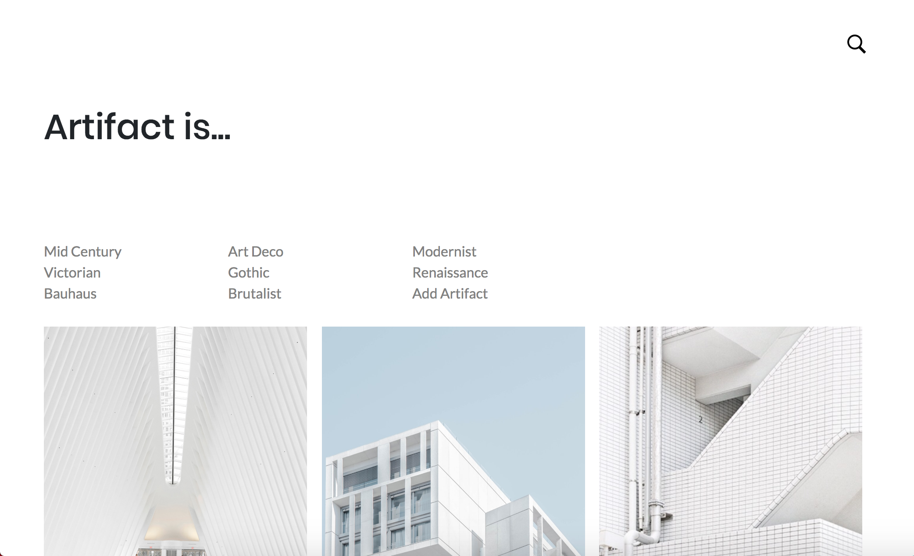
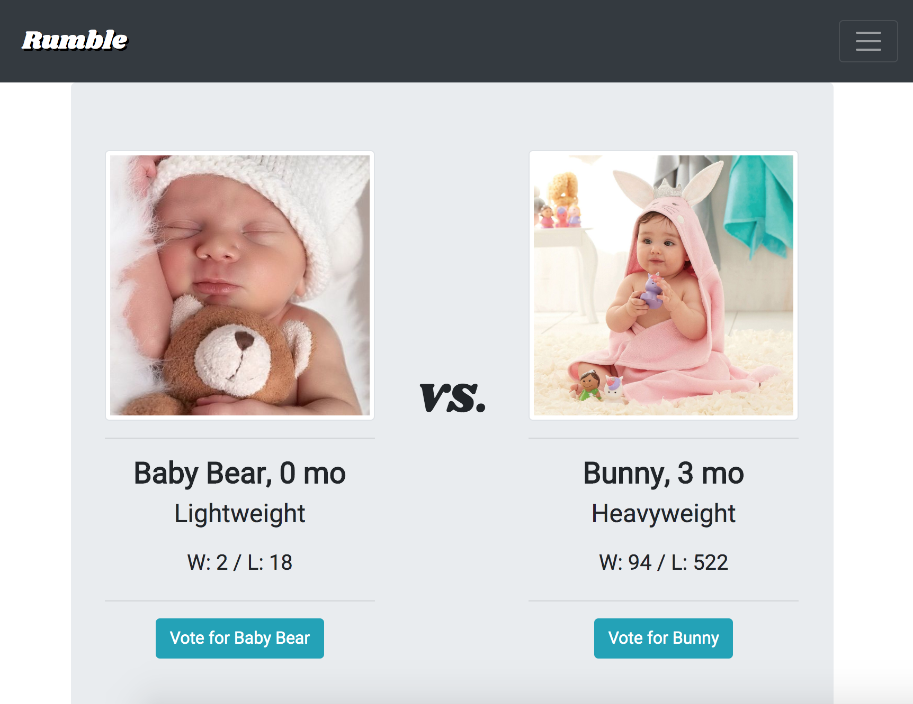
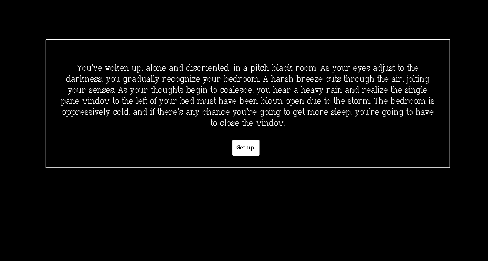

ARTIFACT is an architectural archive.
Frontend built with jQuery, EJS, Bootstrap, HTML and CSS.
Backend built with Node.js, MongoDB, and Express.
Visit ARTIFACT or view on Github.
METONYM is a thesaurus and writer's database.
Frontend built with jQuery, Javascript, HTML and CSS.
Backend built with jQuery and Javascript.
Visit METONYM or view on Github .

RUMBLE is a digital baby fight club.
Frontend built with React, Bootstrap, HTML and CSS.
Backend built with Node.js and MongoDB.
Visit RUMBLE or view on Github.

KURO NEKO is a text-based horror adventure game.
Frontend built with React, HTML and CSS.
Backend built with Ruby on Rails and PostgreSQL.
Visit KURO NEKO or view on Github.